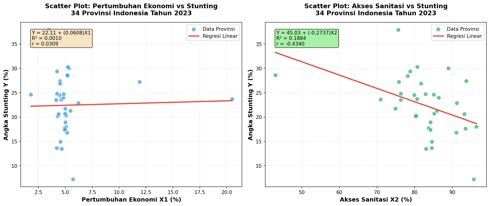

Determinan Stunting di Indonesia
Analisis Pengaruh Pertumbuhan Ekonomi dan Akses Sanitasi Terhadap Angka Stunting di 34 Provinsi (2023)
📋
🇮🇩
Studi Kasus: 34 Provinsi Indonesia
Penelitian ini menganalisis faktor lingkungan dan ekonomi yang memengaruhi prevalensi stunting. Indonesia, dengan populasi lebih dari 270 juta jiwa, masih menghadapi tantangan ganda masalah gizi.
Data & Metode
- Sumber Data: BPS & Kemenkes (Tahun 2023)
- Jenis Data: Cross-Section (34 Provinsi)
- Metode: Regresi Linier Berganda
- Software: Python (Pandas, Statsmodels)
Variabel Penelitian
- Y (Dependen): Angka Stunting (%)
- X1 (Independen): Pertumbuhan Ekonomi (%)
- X2 (Independen): Akses Sanitasi Layak (%)
Visualisasi Data (Scatter Plot)

Kiri: Pertumbuhan Ekonomi vs Stunting (Tidak Signifikan)
Kanan: Akses Sanitasi vs Stunting (Signifikan, Korelasi Negatif)
Statistika Deskriptif
| Variabel |
N |
Minimum |
Maksimum |
Mean |
Std. Dev |
| Stunting (Y) |
34 |
7.20% |
37.90% |
22.44% |
6.12% |
| Pertumbuhan Ekonomi (X1) |
34 |
1.80% |
20.49% |
5.32% |
2.93% |
| Akses Sanitasi (X2) |
34 |
43.00% |
96.42% |
82.57% |
9.46% |
Kesimpulan
Berdasarkan hasil analisis, ditemukan bahwa Akses Sanitasi (X2) memiliki pengaruh yang signifikan terhadap penurunan angka stunting, sedangkan Pertumbuhan Ekonomi (X1) tidak berpengaruh signifikan. Hal ini menunjukkan bahwa peningkatan infrastruktur kesehatan dasar lebih krusial dibandingkan sekadar peningkatan laju ekonomi makro dalam upaya penanggulangan stunting di Indonesia.